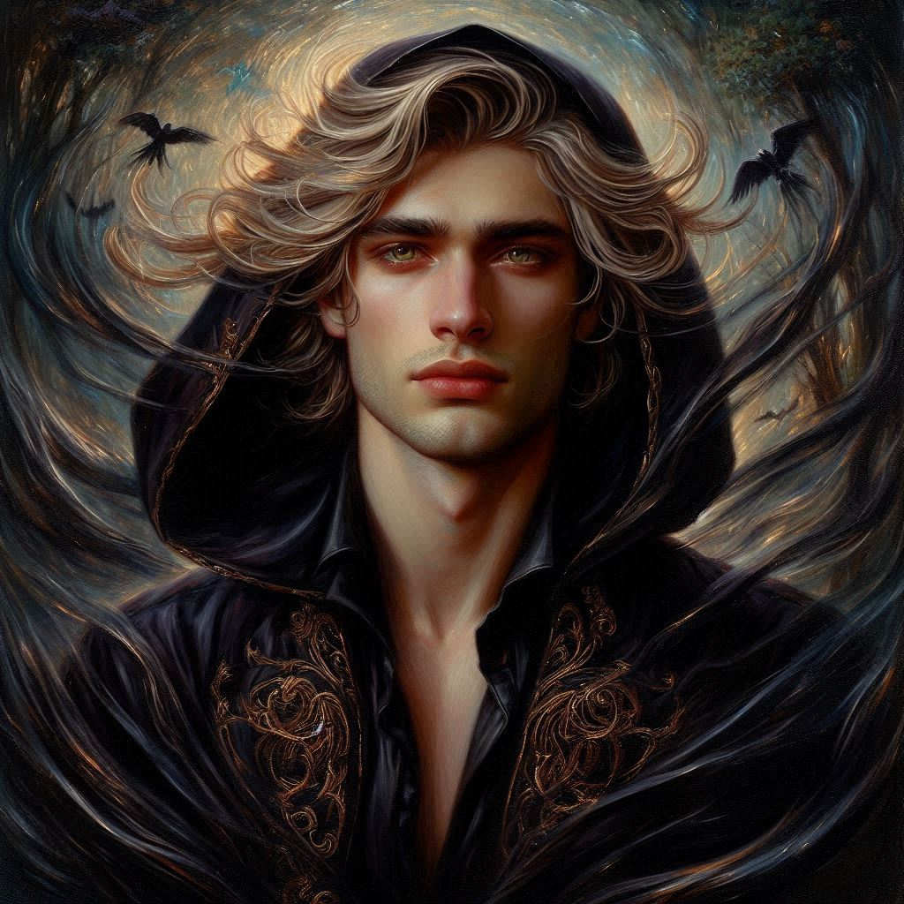
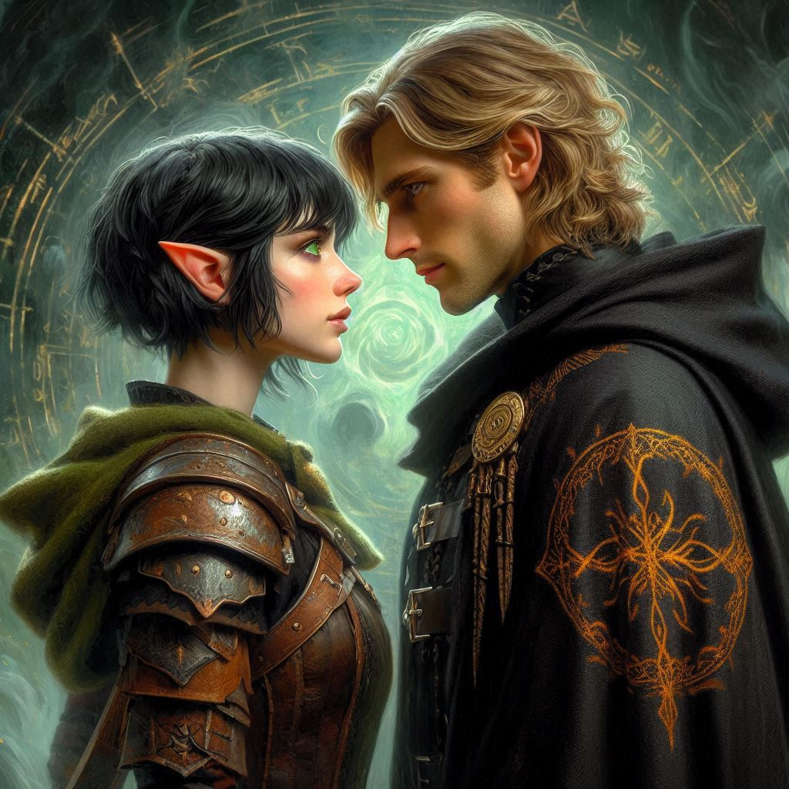
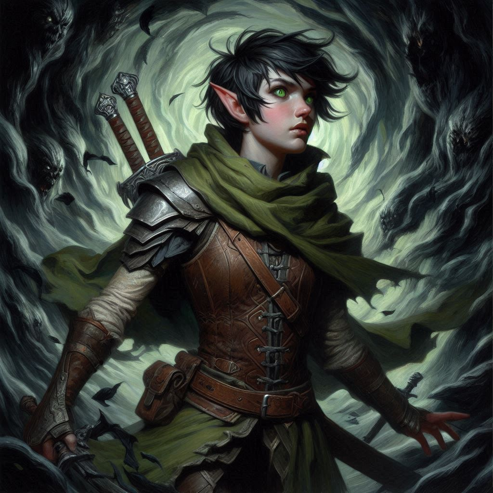
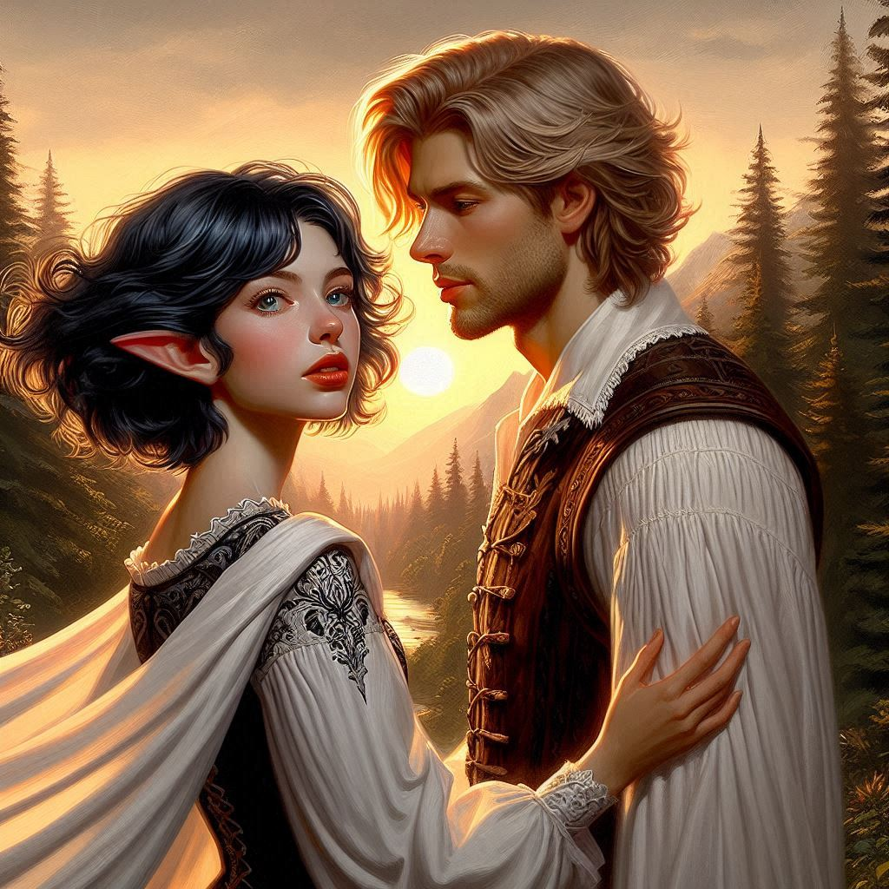

The Dream Lure
You make your decision. Despite the unanswered questions surrounding Onyx’s disappearance, you press forward toward Hemlock Caverns. Every step weighs on you, but the mission to stop Jorsh from unleashing untold horrors on the world is paramount. You can’t let personal ties, no matter how deep, distract you from the greater threat looming over Belladonna—and beyond.
The path ahead is rugged and dense with forest, the thick trees creating a canopy that makes it hard to tell how much time has passed. You’ve been walking for hours, maybe longer. Fatigue claws at your limbs, but you push through. The caverns lie beyond this woodland, and with each passing moment, you draw nearer.
Or so you think.
Suddenly, the world around you shifts. The forest floor beneath your boots softens, and the towering trees warp, twisting unnaturally. A strange haze settles in. You try to shake it off, but your vision blurs, and the vibrant greens and browns of the forest give way to shadowy figures and flickering lights. Something is wrong—this isn’t real. But before you can react, the air grows heavy with magic.
“Stay focused,” you tell yourself, forcing your mind to cut through the fog. But even as you try to resist, a voice echoes through the haze.
“Kira…”
That voice. You know it well. Jorsh.
You feel your heart race, not with fear, but with something else—something more complicated. You’ve been hunting him for days, and now here he is, invading your thoughts, pulling you into his world. But how? Magic, no doubt, but the form it takes is disorienting, like a dream you can’t wake from.
“Kira…”
His voice again, closer this time. You spin around, hand instinctively reaching for the dagger at your waist, but you freeze when you see him. Jorsh stands before you, no longer the reckless boy you once knew, but a man transformed. His dark robes billow slightly in the windless void around you, and his eyes, glowing faintly with power, lock onto yours.
“Jorsh.” His name comes out as a whisper, laden with emotion you don’t want to admit. You steady yourself, gripping your dagger tighter. “This isn’t real.”
“Isn’t it?” he asks, his voice calm, almost soothing. He steps closer, and despite yourself, you don’t move. “Does it matter?”
You force yourself to look away, focusing on the shifting shadows around you. “What are you doing here? What do you want?”
Jorsh’s expression softens, the hard edge of the betrayer fading for just a moment, replaced by a hint of the boy you once knew—the boy you cared for. “I wanted to see you. I wanted you to understand… what I’ve found.”
He steps closer still, and this time, you can’t ignore the pull. There’s something magnetic about him, something you can’t entirely fight. His eyes, now so much darker and filled with a depth you’ve never seen before, hold you in place.
“Kira,” he says softly, “I’ve uncovered a power beyond anything you can imagine. It’s dangerous, yes—but it can be controlled. We can control it. Together.”
His words linger in the air, a temptation that gnaws at you. There’s a sincerity in his voice that makes your resolve waver. You remember the days before everything went wrong, before Jorsh turned rogue and walked this dangerous path. You remember how you once dreamed of adventure together, side by side.
“You don’t have to do this alone,” he continues, his voice coaxing, like a spell being woven. “Join me, and we can change this world. For the better. We don’t have to destroy it. We can make it… ours.”
The chemistry between you is undeniable, and for a moment, you feel yourself leaning toward him. His gaze burns into yours, and you feel a tug in your chest—familiar, painful, and so confusing. You want to trust him, want to believe that the boy you knew is still somewhere within the man standing before you now. But you know better. You have to know better.
With a deep breath, you step back, shaking your head. “No, Jorsh. This… whatever this is, it’s wrong. You can’t control it. No one can.”
His expression darkens, and the softness in his eyes hardens once more. “You don’t understand, Kira,” he says, his voice cold now. “I thought you might, but I see now that you’re still clinging to the past. To what the village, the magistrate, and your precious Elias told you.”
At the mention of Elias, something snaps inside you. “Don’t you dare talk about him,” you spit, your grip on the dagger tightening again.
Jorsh’s eyes flash with something dangerous, but he doesn’t back down. “You think they care about you? They’re just using you to stop me. To keep their world safe, a world that doesn’t belong to us. You and I, we’re the same, Kira. We’re meant for more than this.”
“Stop!” you shout, the noise of it cutting through the haze. “You’re wrong. I’m nothing like you.”
For a moment, Jorsh is silent, his eyes searching yours as if trying to find the truth behind your words. But then, slowly, a smirk forms on his lips, and the vision begins to waver.
“We’ll see,” he whispers. “This isn’t over, Kira. When you’re ready to join me, summon me.”
“Summon you? What do you mean?”
“Vyrethane,” Jorsh says solemnly. “Say the word that will unite us, Kira. This may be the last chance your precious world has. Say it. Vyrethane.”
“I’ll summon you,” you say, feeling the frigid words suck the heat from your chest. You fight back a wave of emotion for the love that was not meant to be. “I’ll summon you so that I can arrest you for your crimes.”
“You’ll summon me because you still love me,” Jorsh says with a confidence that destroys your resolve. “And because you know I still love you.”
“Never,” you say, a single tear rolling down your cheek. “I won’t say it,” you vow. Vyrethane Mountain. This was your place together. The place of your wild infatuation. The place of magical sunsets and first kisses. He knew this word would tug at your heartstrings, and you resent him for trying to manipulate you. “Never,” you repeat.
Jorsh sighs and bows his head in defeat. And with that, the dreamlike vision shatters. The forest returns, the ground solid beneath your feet once more. You’re alone, your heart racing, your mind spinning with Jorsh’s words.
As you shake off the lingering feeling of his presence and press on toward the caverns, your thoughts turn toward Elias, your loyal friend. Your childhood infatuation with Jorsh has always been a strong influence on your desire to keep your relationship with Elias a simple friendship. You have never regretted keeping things strictly professional with Elias… until now. What if you’ve been a fool all these years, holding out for the day when Jorsh would come around and see that his pursuit of magic and revenge was unnecessary?
Whatever magic Jorsh has uncovered, it’s more dangerous than you imagined. And no matter what your heart says, you can’t let it cloud your judgment. This mission isn’t just about him—it’s about saving the world from the darkness he’s about to unleash.
Even if part of you still wants to save him, too.